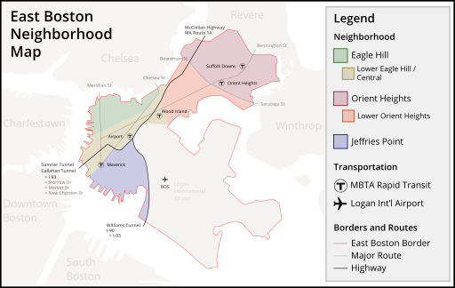
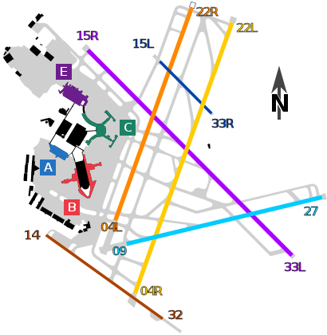

Five islands in Boston Harbor, connected and extended by over 150 years of filling operations, make up the neighborhood of East Boston. Development of the area for homes and businesses began in the 1830s under the direction of the East Boston Company, making this community one of the city's few neighborhoods created with a formal urban plan. East Boston's harbor location enabled it to become a center for shipbuilding and other marine industries, and some of America's most famous clipper ships were built here.
The growing importance of automotbiles created demand for easier access to and from Boston by car. The Sumner Tunnel, Boston Harbor's first auto crossing, was completed in 1934 followed by the Callahan Tunnel in 1961 and the I-90 Tunnel in 1995.
Commercial air travel is the most recent transportation technology to have had an impact on East Boston. The original airfield opened in 1923 on the filled flats of Jeffries Point, and passenger service began in 1929. Landfill on Governor's and Apple islands expanded the airport to 2,000 acres in 1948, and in 1966 Wood Island Park was given over for additional runway space. The airport operated under various city and state jurisdictions until the Massachusetts Port Authority was formed in 1959. Now named Gen. Edward Lawrence Logan International Airport, the facility is one of the earliest municipal airports in the country.
 